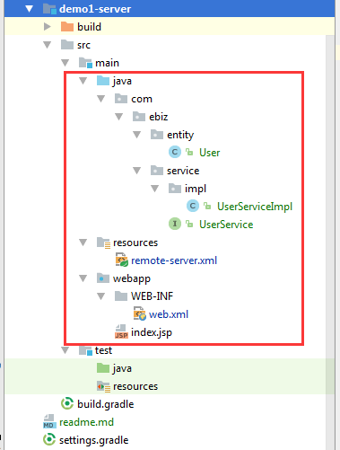
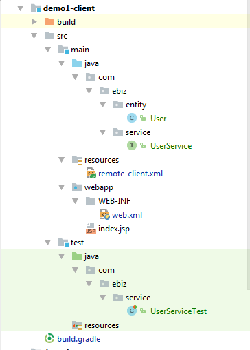

场景：项目A作为主项目，业务实现完整，项目B需要调用项目A中的部分服务，那么项目A就需要提供出服务出来。实现分布式调用的方法有很多，Spring Http Invoker 是其中一种来实现的服务提供和调用。
Spring HTTP Invoker有两种实现方式
- 基于Url映射方式，远程系统处理请求的方式同SpringMVC的controller类似，所有的请求通过在web.xml中的 org.springframework.web.servlet.DispatcherServlet统一处理，根据url映射，去对应的 【servlet名称-servlet.xml】文件中，查询跟请求的url匹配的bean配置
- 基于Servlet方式，由org.springframework.web.context.support.HttpRequestHandlerServlet去拦截url- pattern匹配的请求，如果匹配成功，去ApplicationContext中查找name与servlet-name一致的bean，完成远程方法调用。
Server
项目目录

remote-server.xml
1
2
3
4
5
6
7
8
9
10
11
12
13
14
| <bean name="userService" class="com.ebiz.service.impl.UserServiceImpl"/>
<bean name="userExporter" class="org.springframework.remoting.httpinvoker.HttpInvokerServiceExporter">
<property name="service" ref="userService"/>
<property name="serviceInterface" value="com.ebiz.service.UserService"/>
</bean>
<bean class="org.springframework.web.servlet.handler.SimpleUrlHandlerMapping">
<property name="mappings">
<props>
<prop key="/UserService">userExporter</prop>
</props>
</property>
</bean>
|
web.xml
1
2
3
4
5
6
7
8
9
10
11
12
13
14
| <servlet>
<servlet-name>remoting</servlet-name>
<servlet-class>org.springframework.web.servlet.DispatcherServlet</servlet-class>
<init-param>
<param-name>contextConfigLocation</param-name>
<param-value>classpath:remote-server.xml</param-value>
</init-param>
<load-on-startup>1</load-on-startup>
</servlet>
<servlet-mapping>
<servlet-name>remoting</servlet-name>
<url-pattern>/remoting/*</url-pattern>
</servlet-mapping>
|
Client
项目目录

remote-client.xml
1
2
3
4
5
| <bean id="userService"
class="org.springframework.remoting.httpinvoker.HttpInvokerProxyFactoryBean">
<property name="serviceUrl" value="http://localhost:8081/remoting/UserService"/>
<property name="serviceInterface" value="com.ebiz.service.UserService"/>
</bean>
|
单元测试
1
2
3
4
5
6
7
8
9
10
11
12
13
| @RunWith(SpringJUnit4ClassRunner.class)
@ContextConfiguration(locations = "classpath*:remote-client.xml")
public class UserServiceTest {
@Autowired
private UserService userService;
@Test
public void getUser() {
User user = userService.getUser("test");
assertEquals("test", user.getUsername());
}
}
|
配置说明
服务端(server) 配置web.xml拦截**/remote/*** 请求，remote-server.xml配置拦截的url，如地址：http://host:port/remote/UserService，则会进入此拦截器去找到**bean: userExporter**得到Service。
客户端(client)配置remote-client.xml,通过注解可以得到userService的实例。
Github源码下载